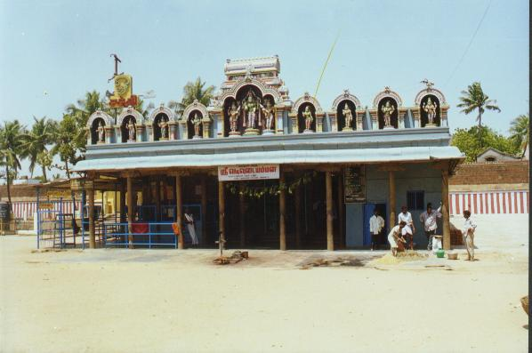

oṟṟiyūr
- Identifier:
- Modern Name (NIC):
- Modern Name (M.I.): tiruvottiyūr
- Modern Name (Govt Press):
- Modern Name: Tiru Oṟṟiyūr
- Modern District & Taluk: DT ( TK)
- Old administrative location: DT ( TK)
- Taluk: Caitāppēṭṭi
- District: Ceṅkalpaṭṭu
- Nearby town:
- Railway station:
- Longit. 80 deg. 18'; Latit. 13 deg. 09' [TO20]
- C.D.Maclean-3: entry: , p. , col. , lines
[ , lat. deg. ', long. deg. ']
- Location: according to PK: Toṇṭi Nāṭu (TO20)
- Name inside hymns:
- Name inside PK:
- Rank inside third volume of PIFI: 51
- Rank inside Civastala Mañcari: 51
- Rank on PY576 map: 14
- Total number of patikam-s: 8
- Campantar: 1 patikam
- Appar: 5 patikam
- Cuntarar: 2 patikam
6 pictures taken in march 2000 (by jlc)





- Patikam 3_57
- Patikam 4_45
- Patikam 4_46
- Patikam 4_86
- Patikam 5_24
- Patikam 6_45
- Patikam 7_54
- Patikam 7_91